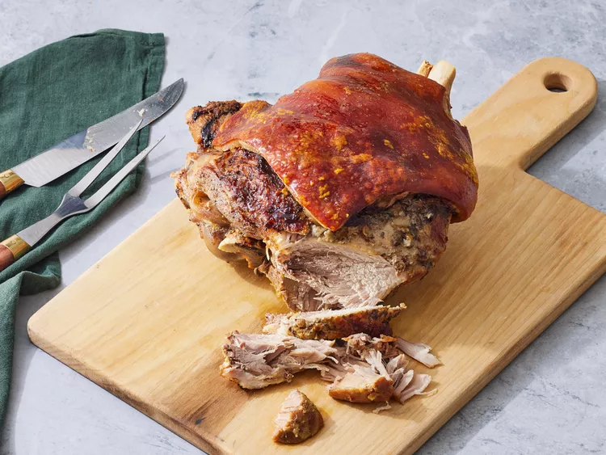

Description
“Pernil is a popular Puerto Rican dish made by roasting a seasoned pork shoulder until it's tender and
delicious.”
Another delicious recipe the Latin American cuisine.
Ingredients
- Skin-on, bone-in pork shoulder (picnic) roast
- Halved medium lime
- Cloves garlic
- Salt
- Olive oil
- Dried oregano
- Ground black pepper
- Adobo seasoning
- Vinegar
- Sazon seasoning
- Cans or bottles of beer
Steps
- Gather all ingredients. Preheat the oven to 325 degrees F (165 degrees C).
- Rub pork shoulder all over with lime.
- Mash garlic into a pasre with a mortar and pestle, then transger to a bowl.
- Mix in salt, oil, oregano, pepper, adobo seasoning, and vinegar until well combined.
- Pull the skin back to within 1 inch from the narrow part of the bone.
- Make 3/4-inch clits all ober the pork with a sharp knife.
- Stuff seasoned garlic paste into the slits, then pull the skin back into place.
- Mix oil with sazon seasoning in a small bowl.
- Rub all over the skin.
- Transfer pork to a larfe roasting pan. Pour beer into the pan, then cover with aluminium foil, sealing well.
- Roast in the preheated oven until pork is slightly pink in the center, about 3 hours. Increase the over
temperature to 350 degrees F (175 degrees C).
- Uncover and continue roasting until the skin is golden brown and crispy, about 2 1/2 hours. An instant-read
thermometer inserted into the center should read at least 145 degrees F (63 degrees C). Remove from the oven
and let stand for 10 minutes before carving.